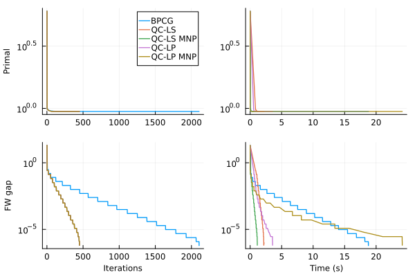

plot_sparsity (generic function with 1 method)Quadratic corrections
This example compares quadratic correction steps for a convex quadratic objective over the $K$-sparse polytope
\[\mathcal{P}_{K,\tau} = \operatorname{conv}\bigl\{ x \in \{\pm \tau/K, 0\}^n : \|x\|_0 \le K \bigr\}.\]
We solve a least-squares problem
\[\min_{x \in \mathcal{P}_{K,\tau}} \frac{1}{m}\|A x - y\|_2^2,\]
so the Hessian is $\nabla^2 f = (2/m) A^\top A$ and the linear term of $\nabla f(x) = (2/m)(A^\top A x - A^\top y)$ is $b = -(2/m) A^\top y$.
The methods follow Halbey, Rakotomandimby, Besançon, Designolle, Pokutta (2025), Efficient Quadratic Corrections for Frank-Wolfe Algorithms:
- BPCG: blended pairwise conditional gradients (local pairwise steps only).
- QC-LS:
FrankWolfe.QuadraticLSCorrectionwithmnp=false— affine minimizer via a linear system, accepted only if it lies in the convex hull (first branch of Algorithm 6). - QC-LS MNP: the same linear system with a Wolfe ratio test, i.e. QC-MNP (Algorithm 6).
- QC-LP:
FrankWolfe.QuadraticLPCorrectionwithmnp=false— QC-LP (Algorithm 5). - QC-LP MNP: the LP form of QC-MNP (Algorithm 8).
Quadratic corrections are combined with BPCG pairwise steps through FrankWolfe.ScheduledStep. If a non-MNP correction is infeasible, the pairwise step is used as fallback.
using FrankWolfe
using LinearAlgebra
using Random
import HiGHS
import MathOptInterface as MOI
include("plot_utils.jl")plot_sparsity (generic function with 1 method)Problem data
n_features = 500
n_samples = 10000
K = 5
τ = 1.0
max_iter = 5000
target_tolerance = 1e-6
Random.seed!(1)
A = randn(n_samples, n_features)
y = randn(n_samples)
AA = A' * A
Aty = A' * y
hessian = (2 / n_samples) * AA
linear_term = -(2 / n_samples) * Aty
f(x) = (1 / n_samples) * norm(A * x - y)^2
function grad!(storage, x)
mul!(storage, AA, x)
storage .-= Aty
storage .*= 2 / n_samples
end
lmo = FrankWolfe.KSparseLMO(K, τ)
x0 = FrankWolfe.compute_extreme_point(lmo, ones(n_features))
common_kw = (;
max_iteration=max_iter,
epsilon=target_tolerance,
verbose=true,
trajectory=true,
print_iter=max_iter ÷ 5,
)(max_iteration = 5000, epsilon = 1.0e-6, verbose = true, trajectory = true, print_iter = 1000)Blended pairwise conditional gradients
result_bpcg = FrankWolfe.blended_pairwise_conditional_gradient(
f,
grad!,
lmo,
copy(x0);
common_kw...,
lazy=true,
)
traj_bpcg = result_bpcg.traj_data2108-element Vector{Any}:
(1, 6.030930494921873, -14.245231388379807, 20.27616188330168, 0.0)
(2, 0.9950989998402416, -9.142981941810598, 10.13808094165084, 0.042309775)
(3, 0.9950989998402416, -4.0739414709851784, 5.06904047082542, 0.082896797)
(4, 0.9950989998402416, -1.5394212355724681, 2.53452023541271, 0.083175877)
(5, 0.9950989998402416, -0.2721611178661133, 1.267260117706355, 0.083412734)
(6, 0.9950989998402416, 0.36146894098706417, 0.6336300588531775, 0.083637142)
(7, 0.9950989998402416, 0.678283970413653, 0.31681502942658873, 0.083870874)
(8, 0.9950989998402416, 0.678283970413653, 0.31681502942658873, 0.084095292)
(9, 0.9916108247191818, 0.6747957952925931, 0.31681502942658873, 0.084305648)
(10, 0.9888359042137943, 0.6720208747872056, 0.31681502942658873, 0.084585279)
⋮
(2100, 0.9444378757651188, 0.9444366672116924, 1.208553426462512e-6, 18.711585726)
(2101, 0.9444378757650582, 0.9444366672116318, 1.208553426462512e-6, 18.721508232)
(2102, 0.9444378757650315, 0.944436667211605, 1.208553426462512e-6, 18.731366322)
(2103, 0.9444378757649771, 0.9444366672115506, 1.208553426462512e-6, 18.741503141)
(2104, 0.9444378757649516, 0.9444366672115252, 1.208553426462512e-6, 18.751442172)
(2105, 0.9444378757649257, 0.9444366672114992, 1.208553426462512e-6, 18.761494254)
(2106, 0.9444378757648729, 0.9444372714881597, 6.04276713231256e-7, 18.771386535)
(2106, 0.9444378757648729, 0.9444372714881597, 6.04276713231256e-7, 18.778556668)
(2106, 0.9444378757648729, 0.9444369016113976, 9.7415347528581e-7, 18.781539639)Quadratic corrections with a pairwise fallback
All QC variants share the same scheduler and BPCG fallback. A new FrankWolfe.LogScheduler is created for each run so that the atom counter starts from zero.
qc_scheduler() = FrankWolfe.LogScheduler(start_time=10, scaling_factor=1.0)
bpcg_step() = FrankWolfe.BlendedPairwiseStep(true)
silent_optimizer() =
MOI.instantiate(MOI.OptimizerWithAttributes(HiGHS.Optimizer, MOI.Silent() => true))
function run_qc(correction)
active_set = FrankWolfe.ActiveSetQuadraticProductCaching(
[(1.0, copy(x0))],
hessian,
linear_term,
)
step = FrankWolfe.ScheduledStep(bpcg_step(), correction, qc_scheduler())
return FrankWolfe.corrective_frank_wolfe(f, grad!, lmo, step, active_set; common_kw...)
endrun_qc (generic function with 1 method)QC-LS (linear system, no ratio test):
result_qc_ls = run_qc(FrankWolfe.QuadraticLSCorrection(hessian, linear_term, false))
traj_qc_ls = result_qc_ls.traj_data407-element Vector{Any}:
(1, 6.030930494921873, -14.245231388379807, 20.27616188330168, 0.0)
(3, 0.9950989998402416, 0.7281873501123759, 0.2669116497278658, 0.846807546)
(4, 0.9916108247191818, 0.7246991749913161, 0.2669116497278658, 0.849704126)
(5, 0.9888359042137943, 0.7219242544859286, 0.2669116497278658, 0.85228443)
(6, 0.9862376608312549, 0.719326011103389, 0.2669116497278658, 0.854866637)
(7, 0.9839250250334386, 0.7170133753055727, 0.2669116497278658, 0.857520282)
(8, 0.9818176793461341, 0.7149060296182683, 0.2669116497278658, 0.86011656)
(9, 0.9799474655589236, 0.7130358158310579, 0.2669116497278658, 0.862743384)
(10, 0.9782144681639319, 0.7113028184360661, 0.2669116497278658, 0.865381135)
(11, 0.9766585736592411, 0.7097469239313754, 0.2669116497278658, 0.868001579)
⋮
(441, 0.9444378757661483, 0.9444350190991387, 2.8566670096339184e-6, 2.139629734)
(442, 0.944437875766025, 0.9444350190990154, 2.8566670096339184e-6, 2.142340955)
(444, 0.9444378757641962, 0.9444350190971866, 2.8566670096339184e-6, 2.147271497)
(446, 0.9444378757640656, 0.944436583739007, 1.292025058633749e-6, 2.150746278)
(447, 0.9444378757639825, 0.9444365837389239, 1.292025058633749e-6, 2.153515586)
(448, 0.9444378757639147, 0.9444365837388561, 1.292025058633749e-6, 2.156461401)
(449, 0.944437875763851, 0.9444365837387924, 1.292025058633749e-6, 2.159412143)
(450, 0.944437875763799, 0.9444372297512696, 6.460125293168745e-7, 2.163936473)
(450, 0.944437875763799, 0.9444368886098973, 9.87153901706984e-7, 2.209610717)QC-LS MNP (Algorithm 6):
result_qc_ls_mnp = run_qc(FrankWolfe.QuadraticLSCorrection(hessian, linear_term, true))
traj_qc_ls_mnp = result_qc_ls_mnp.traj_data407-element Vector{Any}:
(1, 6.030930494921873, -14.245231388379807, 20.27616188330168, 0.0)
(3, 0.9950989998402416, 0.7281873501123759, 0.2669116497278658, 0.00500899)
(4, 0.9916108247191818, 0.7246991749913161, 0.2669116497278658, 0.00775936)
(5, 0.9888359042137943, 0.7219242544859286, 0.2669116497278658, 0.010282147)
(6, 0.9862376608312549, 0.719326011103389, 0.2669116497278658, 0.012869452)
(7, 0.9839250250334386, 0.7170133753055727, 0.2669116497278658, 0.015487012)
(8, 0.9818176793461341, 0.7149060296182683, 0.2669116497278658, 0.018061408)
(9, 0.9799474655589236, 0.7130358158310579, 0.2669116497278658, 0.020603755)
(10, 0.9782144681639319, 0.7113028184360661, 0.2669116497278658, 0.023232852)
(11, 0.9766585736592411, 0.7097469239313754, 0.2669116497278658, 0.02578914)
⋮
(441, 0.9444378757661483, 0.9444350190991387, 2.8566670096339184e-6, 1.108717244)
(442, 0.944437875766025, 0.9444350190990154, 2.8566670096339184e-6, 1.111399762)
(444, 0.9444378757641962, 0.9444350190971866, 2.8566670096339184e-6, 1.116385087)
(446, 0.9444378757640656, 0.944436583739007, 1.292025058633749e-6, 1.119871284)
(447, 0.9444378757639825, 0.9444365837389239, 1.292025058633749e-6, 1.122563347)
(448, 0.9444378757639147, 0.9444365837388561, 1.292025058633749e-6, 1.125208689)
(449, 0.944437875763851, 0.9444365837387924, 1.292025058633749e-6, 1.127865869)
(450, 0.944437875763799, 0.9444372297512696, 6.460125293168745e-7, 1.131916596)
(450, 0.944437875763799, 0.9444368886098973, 9.87153901706984e-7, 1.133136072)QC-LP (Algorithm 5):
result_qc_lp = run_qc(FrankWolfe.QuadraticLPCorrection(hessian, linear_term, silent_optimizer(), false))
traj_qc_lp = result_qc_lp.traj_data407-element Vector{Any}:
(1, 6.030930494921873, -14.245231388379807, 20.27616188330168, 0.0)
(3, 0.9950989998402416, 0.7281873501123759, 0.2669116497278658, 0.548302791)
(4, 0.9916108247191818, 0.7246991749913161, 0.2669116497278658, 0.550964888)
(5, 0.9888359042137943, 0.7219242544859286, 0.2669116497278658, 0.553498332)
(6, 0.9862376608312549, 0.719326011103389, 0.2669116497278658, 0.556013488)
(7, 0.9839250250334386, 0.7170133753055727, 0.2669116497278658, 0.558721384)
(8, 0.9818176793461341, 0.7149060296182683, 0.2669116497278658, 0.561281648)
(9, 0.9799474655589236, 0.7130358158310579, 0.2669116497278658, 0.563844236)
(10, 0.9782144681639319, 0.7113028184360661, 0.2669116497278658, 0.566523819)
(11, 0.9766585736592411, 0.7097469239313754, 0.2669116497278658, 0.569074479)
⋮
(441, 0.9444378757661483, 0.9444350190991395, 2.8566670087914446e-6, 3.285912762)
(442, 0.944437875766025, 0.9444350190990162, 2.8566670087914446e-6, 3.288564744)
(444, 0.9444378757641962, 0.9444350190971874, 2.8566670087914446e-6, 3.541396161)
(446, 0.9444378757640656, 0.9444365837389415, 1.2920251240833533e-6, 3.546373173)
(447, 0.9444378757639825, 0.9444365837388584, 1.2920251240833533e-6, 3.549122472)
(448, 0.9444378757639147, 0.9444365837387906, 1.2920251240833533e-6, 3.55175216)
(449, 0.944437875763851, 0.9444365837387269, 1.2920251240833533e-6, 3.554392855)
(450, 0.944437875763799, 0.944437229751237, 6.460125620416766e-7, 3.558429151)
(450, 0.944437875763799, 0.9444368886103918, 9.871534072446412e-7, 3.559624541)QC-LP MNP (Algorithm 8):
result_qc_lp_mnp = run_qc(FrankWolfe.QuadraticLPCorrection(hessian, linear_term, silent_optimizer(), true))
traj_qc_lp_mnp = result_qc_lp_mnp.traj_data407-element Vector{Any}:
(1, 6.030930494921873, -14.245231388379807, 20.27616188330168, 0.0)
(3, 0.9950989998402416, 0.7281873501123759, 0.2669116497278658, 0.003894722)
(4, 0.9916108247191818, 0.7246991749913161, 0.2669116497278658, 0.006484501)
(5, 0.9888359042137943, 0.7219242544859286, 0.2669116497278658, 0.009033648)
(6, 0.9862376608312549, 0.719326011103389, 0.2669116497278658, 0.011602074)
(7, 0.9839250250334386, 0.7170133753055727, 0.2669116497278658, 0.014207186)
(8, 0.9818176793461341, 0.7149060296182683, 0.2669116497278658, 0.016903054)
(9, 0.9799474655589236, 0.7130358158310579, 0.2669116497278658, 0.01985699)
(10, 0.9782144681639319, 0.7113028184360661, 0.2669116497278658, 0.022780491)
(11, 0.9766585736592411, 0.7097469239313754, 0.2669116497278658, 0.025701378)
⋮
(441, 0.9444378757661483, 0.9444350190991485, 2.856666999812415e-6, 21.068361733)
(442, 0.944437875766025, 0.9444350190990252, 2.856666999812415e-6, 21.07102337)
(444, 0.9444378757641962, 0.9444350190971964, 2.856666999812415e-6, 24.130852465)
(446, 0.9444378757640656, 0.9444365837390151, 1.2920250505416728e-6, 24.136477052)
(447, 0.9444378757639825, 0.944436583738932, 1.2920250505416728e-6, 24.139573233)
(448, 0.9444378757639147, 0.9444365837388642, 1.2920250505416728e-6, 24.142355611)
(449, 0.944437875763851, 0.9444365837388005, 1.2920250505416728e-6, 24.1450321)
(450, 0.944437875763799, 0.9444372297512738, 6.460125252708364e-7, 24.149161356)
(450, 0.944437875763799, 0.9444368886098957, 9.871539032579489e-7, 24.150488224)Comparison
QC-LS and QC-LP agree when the affine minimizer is unique (strongly convex quadratic). QC-MNP can drop atoms even when the affine minimizer lies outside the convex hull, so it typically makes more progress per correction than QC-LP, which then falls back to a pairwise step.
data = [traj_bpcg, traj_qc_ls, traj_qc_ls_mnp, traj_qc_lp, traj_qc_lp_mnp]
labels = ["BPCG", "QC-LS", "QC-LS MNP", "QC-LP", "QC-LP MNP"]
plot_trajectories(data, labels; xscalelog=false)
This page was generated using Literate.jl.